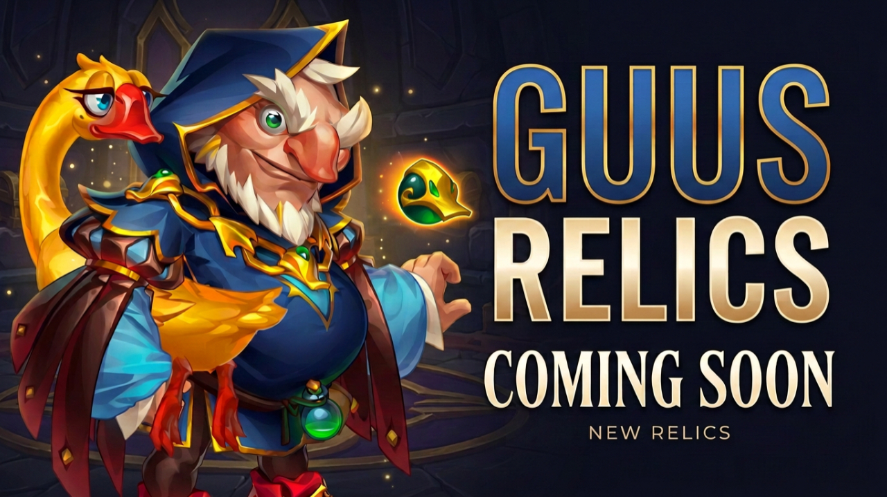

LEVEL 1
Featherhood
Creates an additional automatic source of Golden Feathers.
Golden Feathers, Critical Healing and a potentially major defensive mechanic against Magic Critical Damage and Pure Critical Damage.

Guus is receiving four Legendary Relic upgrades that create an interconnected system around Golden Feathers, Critical Hits, healing and defensive protection. The progression begins with additional Feather generation and eventually reaches a Level 30 effect that could become highly relevant against Critical Pure Damage.
Creates an additional automatic source of Golden Feathers.
Allows healing from Guus' skills to become Critical Healing.
Adds another interaction between Critical Damage, healing and Golden Feathers.
Golden Feather becomes a major defensive tool against specific types of Critical Damage.
Every 11 seconds, Guus grants a Golden Feather to himself and to the ally with the highest Health stat.
Golden Feathers already sit at the centre of Guus' kit, connecting healing, protection, Critical Hit interactions and his ability to protect allies from falling dangerously low.
Beak Peak normally activates when an ally carrying a Golden Feather is about to fall below 25% Health. Before that happens, part of the Hero's Health is restored.
The amount restored increases for every remaining second of the Golden Feather's duration. Once the protection activates, the Golden Feather disappears.
The Legendary upgrade introduces a new mechanic: Critical Healing.
Honkageddon already connects Guus' Critical Hits with healing, Golden Feathers and offensive support.
Normally, Guus' Critical Hits do not deal their additional Critical Hit damage. Instead, they restore Health to allies around the target and give those allies Golden Feathers.
Allies carrying Golden Feathers also deal increased damage with their Critical Hits, while Honor Heroes receive additional damage depending on their current Health.
At Legendary Relic Level 20, the description states that when Guus deals critical damage, he additionally restores Health and grants a Golden Feather to nearby allies.
While Guus and his allies are affected by a Golden Feather, they take less Magic Critical Damage and Pure Critical Damage.
75%Guus' Level 30 Relic becomes particularly interesting when compared with one of the newer Critical Pure Damage interactions.
Kendle's Legendary Relics allow the Pure Damage of her allies to become critical.
The chance depends on Magical Critical Hit Chance, and when that Pure Damage becomes critical, Critical Pure Damage reaches 200%.
Heroes affected by Golden Feather receive 75% less Pure Critical Damage.
On paper, this appears directly relevant to the Critical Pure Damage engine created by Kendle's mechanic.
Cleaver already produces Pure Damage through his own kit. Kendle does not need to create that Pure Damage for him.
What her mechanic can potentially do is allow Pure Damage that already exists to become Critical Pure Damage.
Cleaver is only one example. The same principle is relevant to allies producing Pure Damage that can interact with Kendle's mechanic.
This is why Guus' Level 30 reduction deserves direct testing against Kendle compositions and the strongest Critical Pure Damage combinations available.
Featherhood expands automatic Golden Feather generation.
Guus' healing can critically heal for 200%, with the chance connected to Critical Hit Chance.
Honkageddon gains another connection between Critical Damage, healing and Golden Feather generation.
Golden Feather becomes protection against Magic Critical Damage and Pure Critical Damage.
The 75% reduction only exists while a Hero is affected by a Golden Feather.
That makes Golden Feather uptime one of the most important factors to examine when Guus' Legendary Relics become available for battle testing.
The Relic descriptions give us the mechanics, but several practical questions cannot be answered from the descriptions alone.
Guus' Legendary Relics form a clear progression rather than four isolated upgrades.
Level 1 expands Golden Feather generation. Level 10 introduces Critical Healing. Level 20 adds another interaction between Critical Damage, healing and Golden Feathers. Level 30 transforms Golden Feather into a potentially powerful defensive mechanic against Magic Critical Damage and Pure Critical Damage.
The descriptions create an exciting theory, particularly against Kendle's Critical Pure Damage mechanic. But the most important conclusions — Golden Feather uptime, actual Level 20 behaviour, development priorities and the Kendle matchup — belong in battle testing.
Once those tests are complete, Gods of Alliance will return with the results.